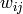
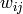

07 - Data Clustering¶
Neural network, K-nearest-neighbour and Bayesian learning algorithms are all supervised learning algorithms. This means that the correct output is made known to the machine by what we might call a teacher.
With unsupervised learning we cannot know whether an answer given is correct or incorrect. Instead we can achieve different goals such as, patterns, relations, and knowledge. This is called data mining.
Motivating Problems¶
With a true colour image 24 bits are used per pixel (8 bits per channel) providing 1677216 possible colours. A gif image uses 8 bits per pixel giving a total of 256 possible colours.
Gifs work by having a table of 256 entries each specifying a red, green and blue value. A reference for each pixel in the image can then be stored (to one of the colour entries in the table) instead of the actual RGB value.
So the problem is how do we choose the pixels to be in the table...
If we take the red, green and blue values of each pixel in the image and use those values as the dimensions in euclidean space we will begin to see groupings of similar colours in 3D space.
Then we can replace gatherings of similar colours (points in euclidean space which are close to each other) with a single colour.
Once the number of euclidean points have been reduced to 256 we can create the gif image.
K-Means¶
An algorithm for partitioning (or clustering)  data points into
data points into  disjoint subsets containing
disjoint subsets containing  data points.
data points.
Suppose that our data has  dimensions
dimensions ![[x_{i1}, x_{i2}, ..., x_{in}]](../../../../images/math/dd0b6d1fe22e237ced1c31c91efe985be1336b47.png) for for data points.
for for data points.
We want to cluster these points into subsets (clusters), where is preset ( would be 256 in the gif example).
For each cluster, we define a prototype point ![M_j = [m_{j1}, m_{j2}, ..., m_{jn}]](../../../../images/math/045fadfbf3f86e4e471cae1a9a3b888aeb5f33d3.png) where
where  , which can be set randomly the first time.
, which can be set randomly the first time.
The distance between all euclidean points  and each cluster prototype
and each cluster prototype  is calculates as:
is calculates as:

A euclidian point is assigned to the jth cluster  (meaning ) if the following condition holds:
(meaning ) if the following condition holds:
...
J-Means Algorithm¶
Step 1¶
Arbitrarily choose from the given sample set  , some initial cluster centres.
, some initial cluster centres.
![m_{0j} = [m^0_{j1}, m^0_{j2}, ..., m^0_{jn} j = 1, 2, ..., k]](../../../../images/math/ae6a726c51bd59d470c5c459c241b8ce1529fef3.png)
There are no known best ways to decide the sample set, but could be the first samples of the sample set or be generated randomly.
We then say that  where
where  is the iteration index.
is the iteration index.
Step 2¶
Assign each of the samples () to one of the clusters according to the distance between each sample and the centre of each cluster.
Step 5¶
If the terminating criterion is met, then stop. Otherwise and go back to step 2.
Stopping Criterions
The K-means algorithm can be stopped based upon the following criterions:
The errors do not change significantly in two consecutive epochs
For example where
 is some preset small value.
is some preset small value.No further change in the assignment of the data points to clusters in two consecutive epochs
Stop after fixed number of epochs regardless of the error.
What Does K-Means Do?¶
It tries to find the centre vectors ‘s that optimise the following cost function:
Some Remarks¶
- K-Means is a gradient descent algorithm, trying to minimise a cost function
 .
. - In general, the algorithm does not achieve a global minimum of over the assignments.
- It is sensitive to the initial choice of cluster centres. Different starting cluster centroids may lead to different solutions.
- It is a popular method, many more advanced methods have been derived from this simple algorithm.
Competitive Learning Neural Networks¶
This type of network usually has one layer of fan-out units and one layer of processing units:
The processing layer consists of processing units, each receiving input signals from the fan-out units. The input for processing unit  has weight  assigned to it.
has weight  assigned to it.
The output of the processing units compete on the basis of which of them has its weight vector for all , closest to the input vector  (as measured by a distance function D).
(as measured by a distance function D).
The winning unit generates an output signal of 1; all the other units having outputs of 0.
Each processing units calculates the distance between the input vector and the weight vector connecting the input to it, the activation of the ith processing unit is:
is a distance measurement function. The most common choice for this is the euclidean distance.
Once each processing unit has calculated its activation, a competition takes place to see which output unit has the smallest activate value.
This implies finding the unit which has its associated weight vector closest to the input vector . THe unit with the smallest activation value is declared as the winner, all other units are losers.
- The aim of such a network is to cluster the input data.
- Simpler inputs should be classified as being in the same cluster
- There is no know desired outputs
- The outputs are found by the network itself from the correlation of the input data
- Such a network is also called a self-organising or an un-supervising neural network.
- This is unsupervised competitive learning